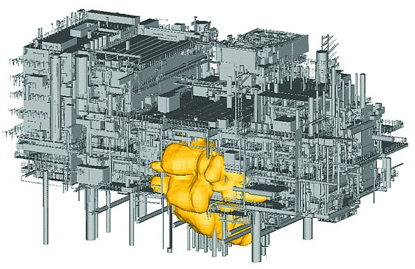

FLACS-as-a-service offers a unique explosion and fire-modelling service on the Cirrus HPC platform. Used in the oil, gas and process industries, the tool can model the consequences of dispersion, explosion and fire, helping to improve safety.
Gexcon AS is a world-leading company in the field of safety and risk management and advanced dispersion, explosion and fire modelling. It provides a range of services including consultancy, training and research and development, as well as providing the FLACS CFD code for modelling explosions and atmospheric dispersions.
Gexcon has developed a computational fluid dynamics (CFD) explosion and fire modelling software product called FLACS. FLACS is a highly regarded tool for modelling flammable and toxic releases in a technical safety context and it is used extensively by Gexcon on customer consultancy projects.
Gexcon UK can use FLACS on its local computational platforms, but it can be beneficial to run the code in high-performance computing (HPC) environments such as Cirrus instead as this drastically reduces the overall simulation time. The Cirrus cluster is ideally suited to run multiple FLACS simulations simultaneously. Short individual simulations (each typically takes up to a few hours’ computing time) can be processed efficiently and several hundred can be processed in a matter of days.
Gexcon and EPCC collaborated to develop a unique explosion and fire modelling-service on the Cirrus HPC platform. The service will have wide applicability across the petrochemical, nuclear and general process manufacturing industries with users benefiting from a significant reduction in simulation times.
GexCon has gained the advantages of HPC, such as delivering results faster to its customers, without the need to invest in large-scale HPC infrastructure.
Following on from the successful implementation of FLACS on Cirrus, Gexcon and EPCC collaborated to develop FLACS-as-a-service on the Cirrus HPC platform. The service will have wide applicability across the petrochemical, nuclear and general process manufacturing industries with users benefiting from easy, cost-effective access to FLACS which can reduce simulation times from weeks to a matter of hours.
The new service will be instrumental in driving impact from EPSRC’s investment in the Cirrus platform.

Acknowledgement
This work used the Cirrus UK National Tier-2 HPC Service at EPCC funded by the University of Edinburgh and EPSRC (EP/P020267/1). (http://www.cirrus.ac.uk)
Contact Us
If you are interested in creating a case study highlighting your work on Cirrus then please do not hesitate to contact the support team.